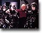

|

Anlise da HQ "The Gorn Crisis"
Enquanto a Guerra Dominion come solta, Picard e sua tripulao tentam uma aliana com os Gorns, tradicionais rpteis humanides de Jornada. Gustavo Leo conta como no review da HQ "The Gorn Crisis"
|
Review de "Tales of the Dominion War"
A guerra da Federao contra o Dominion no foi s o que apareceu em DS9. Leandro Pinto traz, em seu review sobre o livro "Tales of the Dominion War", mais histrias sobre o sangrento combate.
|
Review do livro "First Frontier"
A tripulao clssica visita um universo alternativo em que a Terra dominada por rpteis em vez de humanos. Trata-se do tema do livro "First Frontier", analisado por Cludio Silveira no mais novo review do TB.
|
| |

12/17/07
Especial
Trek Brasilis entra no sculo 21
Site estria novo formato "web 2.0" para as notcias
12/04/07
Filmes
Teaser de Jornada XI na estria de "Cloverfield"?
Se confirmado, data de lanamento do vdeo seria em janeiro
12/01/07
Filmes
Mais detalhes sobre design e filmagens de Jornada XI
Fonte do site IESB teve acesso ao design da nova Enterprise
12/01/07
 Interao
New Voyages escolhido melhor web vdeo sci fi
Fanfilm foi premiado na Online Vdeo Awards da TV Guide
12/01/07
Filmes
Possvel data de estria de Jornada XI
Filme pode estrear em fevereiro de 2009 na Argentina
11/29/07
Filmes
Stuart Baird fala como foi dirigir Nmesis
Diretor fala de fs ofendidos por ele no conhecer franquia
11/26/07
Filmes
Famosa locao de filmes em Jornada XI
Cenrio da luta entre Kirk e capito Gorn pode aparecer em filme
11/26/07
Filmes
Shatner ainda lamenta no estar em filme
Ator afirma que nada sabe sobre a nova produo
11/22/07
Geral
Takei diz que Jornada perdeu o rumo
Ator fala sobre Jornada XI, as sries e outros atores
11/22/07
Filmes
Roteiristas falam de Jornada XI e Transformers
Orci e Kurtzman apontam as diferenas entre as duas produes
11/22/07
Filmes
Zachary Quinto compara Heroes com Jornada
Confira tambm mais fotos do ator caracterizado como Spock
11/19/07
Filmes
Ben Cross Sarek
Ator ingls dar vida ao pai de Spock
11/19/07
Filmes
Bruce Greenwood fala sobre o roteiro de Jornada XI
Ator comenta sobre interpretar Pike e a expectativa dos fs
11/19/07
Filmes
Roteiristas fazem crticas e elogios a Jornada XI
Em seu blog, John August diz que greve pode afetar filme
11/16/07
Filmes
Clifton Collins Jr. ser o segundo vilo de Jornada XI
Ator far Ayel, o general brao direito do vilo Nero de Eric Bana
11/16/07
Filmes
Jennifer Morrison pode ser a Nmero Um
Abrams confirma presena de atriz, mas no sua personagem
11/14/07
Filmes
IESB revela mais detalhes sobre roteiro do filme
Histria ter elementos de A Cidade Beira da Eternidade
11/14/07
Filmes
Bruce Greenwood fala sobre Capito Pike
Ator afirma no ser f da franquia, mas mostra-se animado
11/14/07
Filmes
Russell nega participao em Jornada XI
Mary Markey far o trabalho de edio do filme
11/13/07
Filmes
Surgem primeiras imagens de Quinto como Spock
Dois sites mostram fotos e vdeos de ator j caracterizado
11/10/07
Filmes
Saram as primeiras imagens do novo filme
Uniformes parecem ter cores originais em tonalidades mais escuras
11/10/07
Filmes
Oficial: Winona Ryder ser a me de Spock
E rumores de mais dois atores em papis secundrios
11/08/07
Filmes
Agncia convoca figurantes para Jornada XI
Prduo procura por cadetes, vulcanos e aliengenas
11/08/07
Interao
Of Gods and Men estria em dezembro
Primeira parte estar disponvel para donwload em 22/12
11/08/07
Filmes
Oficial: Bruce Greenwood ser o Capito Pike
Aps vrias especulaes, ator canadense escolhido para papel
11/08/07
Filmes
Rachel Nichols fala sobre presena em Jornada XI
Atriz confirmou estar em negociaes com a produo do filme
11/08/07
Geral
Celebridades de Jornada em novas produes
Nomes famosos da franquia no teatro, TV e cinema
Para
ler notcias ainda mais antigas, basta clicar aqui.
|